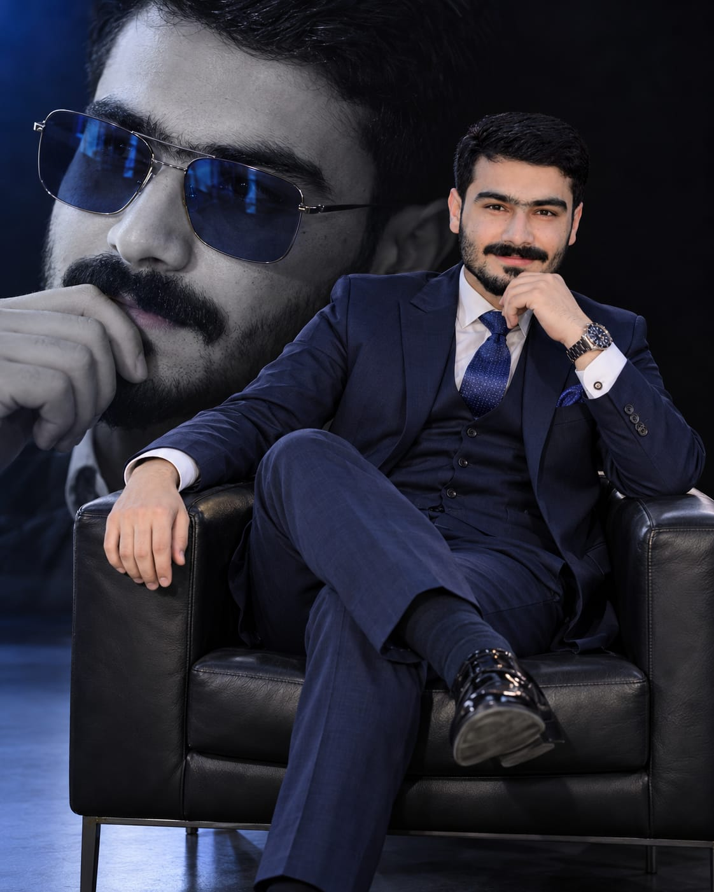

Business
& decisions
How businesses think about costs, competition and the choices that shape their direction.
The firm
Mustafa Sherazi.Personal portfolio / Student
Business Economics student.
Exploring the ideas behind markets, businesses and everyday decisions.
A perspective shaped by learning.
I'm Mustafa Sherazi, a Business Economics student. My studies connect the decisions businesses make with the wider economic forces around them.
This portfolio is a starting point for my academic journey: a place to introduce myself and share the questions at the heart of my field.
From an individual choice to an entire economy, each perspective adds to the picture.
How businesses think about costs, competition and the choices that shape their direction.
The firmHow supply, demand and incentives influence what people buy and what businesses offer.
The marketHow growth, employment and changing prices connect business activity to everyday life.
The bigger pictureA few starting points for thinking economically.
Prices reflect the interaction of supply and demand. Changes in production costs, availability and what people want can all influence the price we see.
Looking beyond the immediate cost helps. Benefits, risks and opportunity cost—the value of the next-best alternative—are all part of the decision.
Changes in household income, borrowing costs and employment can influence customer demand and the choices available to a business.
04 — Get in touch
Reach me on WhatsApp or send me an email.
A journey in progress